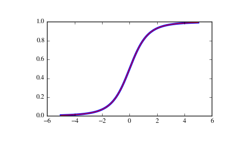

scipy.special.nctdtr¶
- scipy.special.nctdtr(df, nc, t) = <ufunc 'nctdtr'>¶
Cumulative distribution function of the non-central t distribution.
Parameters: df : array_like
Degrees of freedom of the distribution. Should be in range (0, inf).
nc : array_like
Noncentrality parameter. Should be in range (-1e6, 1e6).
t : array_like
Quantiles, i.e. the upper limit of integration.
Returns: cdf : float or ndarray
The calculated CDF. If all inputs are scalar, the return will be a float. Otherwise it will be an array.
See also
Examples
>>> from scipy import special >>> from scipy import stats >>> import matplotlib.pyplot as plt
Plot the CDF of the non-central t distribution, for nc=0. Compare with the t-distribution from scipy.stats:
>>> x = np.linspace(-5, 5, num=500) >>> df = 3 >>> nct_stats = stats.t.cdf(x, df) >>> nct_special = special.nctdtr(df, 0, x)
>>> fig = plt.figure() >>> ax = fig.add_subplot(111) >>> ax.plot(x, nct_stats, 'b-', lw=3) >>> ax.plot(x, nct_special, 'r-') >>> plt.show()
